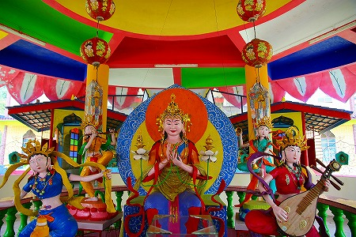
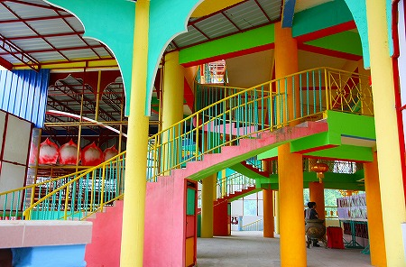

錫採掘で栄えた街、イポーにて次に向かうのは郊外の辺鄙な場所。
車は森や畑の間を縫うようにひたすら進む。運転手(絵に描いたようなインド人のおっさん、ヒンズー教徒)は「ホントにこの先に何かあるのか？」と言いたげな様子。
あるんです。凄い寺が。
ある意味この寺を見るためにマレーシアまで来たと言っても過言ではないほど素敵な寺がある！…はずなんですけど…段々道が狭くなってきたぞ…
運転手（仏教に興味なし、子供２人）には「君、そこを曲がってくれたまえ」「君、そこの小道へ入ってくれたまえ」などと指示をしているが、内心「アレ?この道かな？」「行って見て激ショボだったらどうしよう…」等々脳内ではネガティブ要素が充満中。
でも行くんだよ！
…てなわけで未舗装のガタガタ道をしばらく進むと突然視界が開けて夢のような光景が現れた。
おおお、これぞ桃源郷！
池の向こうに建つのは奇妙な仏塔と赤い衣の大仏。
しかも塔の中にも大仏が格納されているではないか！
事前の薄～いリサーチ情報を遥かに凌駕する素晴らし過ぎるビュー。
変な仏塔とコンクリ大仏、という
珍寺界の中でも一二を争う高ポイントのアイテムがそろい踏み。もはや脳内麻薬で脳味噌が煮浸し状態！なのである。
私はこの眺めを生涯忘れることはないと思う。あ、思い出すだけでアドレナリンが…。
お寺の名前は
打捫心意佛院。
英字表記ではPersatuanEnlightenedHeartBuddhistと記されていた。
直訳すると
啓発ハート仏陀会…うむ～。判ったような判らないような…。
通称であるチベット寺院、というのが一番判りやすいかな。
改めて塔を眺める。
いかがであろう、この塔の雄姿。
下の方は見えないが10階以上はありそう。
正面が開け放たれていて大仏さんが格納されている塔なんて見たことないぞ。
ハト時計のように12時になったら大仏さんが外に飛び出してきたらどうしよう…。そんな事になったらショックで死ぬかも、俺。
すでに脈拍も血圧も絶賛急上昇中なのだが、あくまでも平静を装い運転手（後に判明するのだが、凄い貫禄なのに私と同い年で大ショック）に「あ、君。ここでしばらく待っていてくれたまえ。」と言い残しつつ、小走りで境内に突入しましたともさ。
何だか仏教寺院らしからぬ雰囲気。チベット寺院、という雰囲気とも程遠い。
どちらかというと珍妙な色使いの要塞、といった雰囲気だ。
詳細がまったくわからないまま恐る恐る境内に。
入るとすぐに祭壇のようなものがあり、いかにもチベットらしい仏像が並んでいた。

ただし、中にはかなり香ばしいお方も。
馬車に乗ったガネーシアなどヒンズー経の神像やインド風味の像も多かった。
この辺も左右の御婦人はインド人でしょう。
ここ、本当にチベット仏教の寺なのだろうか…。
これだけの大規模な寺院なのに境内には誰も人がいない。なので詳しい事は判らない。
仕方がないので本尊らしき仏像に手を合わせ先へ進む。
というか例の塔が気になっちゃって気になっちゃって仕方ないんですけど。
ド派手な回廊の先に現れたるのは…
これまたド派手な神さま軍団がお出迎え。

漫画チックですね。
周りの回廊や柱、窓なども冗談なのかと思えるほどの色まみれ天国。絵具のチューブから出しっぱなしのような原色が飛び交う。
そこに祀られる四天王？もファンキーないでたち。足元の虎もステキだ。
さて、ここからいよいよ塔の内部に入る。
中央には青い仏陀像がおり、左右に眷属を従えている。
手前に並んでいる小さな仏像だけはにチベット様式だ。
で、その上を見上げると…

うひょ～。
どーですか！お客さん。
派手な色に彩られた六角形のフロアが上へ上へと連なっている。
まるでSF映画に出てくる未来都市か異星人の宇宙船のようではないか。
仏教寺院がこんなにカッコよくて良いのか！
六角形の中央にメインの柱があり、その柱からは数フロアごとに六角形の小フロアが付随している。
その周りに六本の柱が取り囲むように建っている。その6本の柱にも六角形の小フロアが串刺しのように取り付いている。
数えてみるとフロアは9層。
つまり今見上げている1階を含め10層分の吹き抜け空間に六角形の小フロアが浮かんでいるような按配になる。
これは
曼荼羅の世界観を表現したものなのだろうか。だとするとやけにSFチックな曼荼羅だねえ。
でも考えてみれば人間の根源的な欲求である
世界の創造という意味ではみんな一緒なんだよなー。
SF映画のセット、曼荼羅、須弥山、地獄極楽、パラダイス、ゴミ屋敷、パノラマ島…みんな
それぞれの脳内にある想像上の世界の具現化なのだ。
これほどのステキな世界モデルがマレーシアの地方都市の人も訪れないような辺鄙な地で花開いているとは…、
私はまたひとつ世の中が判らなくなりましたよ。
階段を昇っていこう。
着目すべきは吹き抜けの異質さだけではない。
各フロアの階段のデザインや形状も多彩で、見飽きることがない。
さながら
階段の博物館のようでもある。

この塔は二つの要素を内包している。
ひとつは六角形の吹き抜けにハニカム構造よろしく小さなフロアを配する、という揺るぎない強固なコンセプト。
そしてもうひとつは行き当たりばったり的な多彩な階段の取り付き方。
その対照的な二つの要素が入り混じって不思議な空間に仕上がっているのだ。
↓こういディテールも一見簡素だが芸が細かい。
3階から2階を見下ろしたところ。
中央の六角形のフロアに仏像が置かれている。
モチロンこの仏像に近づくことは出来ない。回り縁のフロアから吹き抜け越しに眺めることしか出来ないのだ。
そこからは
参拝者と仏像の縮まることのない距離感、断絶感が漂う。
目の前に見えているのに近づくことが出来ない仏の姿。神と人の物理的な距離感はそのまま精神的な距離感を象徴している、ともいえよう。
つまり
軽々しく近寄るんじゃねえよ！ということを表現しているのだ（たぶん）。
3階の一角にあった謎の回転式蓮華装置。凄く楽しそうだが、残念ながら用途は一切不明ナリ。
3階から上は同じようなフロア構成が延々と続く。
周り縁の内側に取り付く六角形の小フロア、その中央に仏像の安置されるフロア、という構成。
大体↓こんな感じです。
仏像の正面に位置する小フロアはいいのだが、仏像の後ろにある小フロアとかあまり意味がないような気もするが…まあ、面白いからイイでしょう！
同じような平面が続くが途中途中に外に突き出した展望コーナーなどがあり、丁度良いアクセントとなっている。
先ほどまでは見上げてばかりいた吹き抜けだが、昇るにつれて、今度は見下ろすようになってくる。
高いところが苦手な方は結構辛くなってくるレベル。
窓の外には大仏さんの姿も見える。
きらびやかな空間に不釣合いな無骨な昇降機がある。

恐らく仏像や仏具を運び込むのに使ったと思われる。
そうこうしている内に吹き抜けの最上部、10階に到達した。
しかし、コレだけでは終わらない。ホラ、さっき外から見えてた
アレがあるじゃない。
後半戦に続く
馬来西亜珍寺大行進
珍寺大道場 HOME